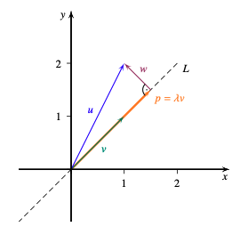

import numpy as np
v = np.array([[1],[2],[3]])
g = np.array([[3],[2],[1]])
print((v.T@g)[0,0])
#or
print(np.dot(v.T,g)[0,0])Norm
Dot Product
Used in matrix multiplication. For two vectors use 1D array in python
Definition:
\[ \mathbf{x} \bullet \mathbf{y} = \begin{bmatrix} x_1 \\ \vdots \\ x_n \end{bmatrix} \bullet \begin{bmatrix} y_1 \\ \vdots \\ y_n \end{bmatrix} = x_1 y_1 + \cdots + x_n y_n = \sum_{i=1}^n x_i y_i \]
Exercise 6.1.
Expand \((x+y) \bullet (x+y)\) (can we express with norm?)
\((x+y) \bullet (x+y) = x \bullet x + 2(x\bullet y)+y \bullet y\)
Express with norm if x and y are orthogonal because dot product is zero:
\(\left\|x\right\|^2 +\left\|y\right\|^2\)
Expand \((x+y) \bullet (x-y)\) (can we express with norm?)
\((x+y) \bullet (x-y) = x \bullet x - y \bullet y\)
We can express with norm
\(\left\|x\right\|^2 - \left\|y\right\|^2\)
Norm
Euclidean Norm is has a geometrical interpretation. Using pythagorean theorem as often as \(\mathbb{R}^2-1\) we get the norm or length of a vector
\[ \|x\| = \left\| \begin{bmatrix} x_1 \\ x_2 \\ \vdots \\ x_n \end{bmatrix} \right\| = \sqrt{x_1^2 + \cdots + x_n^2} \]
Linearity of the Euclidean norm doesn’t hold:
\[ \left\|x + y \right\| \not= \left\|x\right\|+ \left\|y\right\| \]
In fact:
\[ \left\|x + y \right\| < \left\|x\right\|+ \left\|y\right\| \]
Since geometrically x+y represents the fast way (Triangle inequality).
The dot product of a vector with itself is the squared Euclidean norm:
\[ x \bullet x = \left\| x\right\|^2 \]
Manhattan norm
Defined by: \(\left\| x \right\|_1 = |x_1|+\cdots+|x_n|\)
Norm
Metric
Orthogonal Projection
 Orthogonal Projection onto a line spanned by vector v.
\[ projection = \frac{u \bullet v}{\left\|v\right\|^2}*v \] Find orthogonal vector w:
\[ w = u-p \] we can write w as \(u = p + w\) and yields a decomposition of u as sum of two vectors which are orthogonal.
Orthonormal
A set is orthogonal if any two vectors in that set are orthogonal (i.e., linear independent: \(dot \space product = 0\) or \(u\bullet v = 0\)).
A set is orthonormal if any two vectors in that set are orthogonal and each vector is normalized (i.e., \(norm = 1\) or \(u\bullet u = 1^2\)).
- An orthonormal set is also called orthonormal system (ONS for short).
- Normalize vectors by diving each components with the norm (\(\left\|vector\right\|\)) of vector.
- Orthonormal basis span a vector space:
- each vector \(v\) in that space can be formulated as linear transformation of those basis \(b_1,b_2\).
- Finding the coordinates \(a_1,a_2\) can be done by \(a_1 = v\bullet b_1\) and \(a_2=v \bullet b_2\).
\[ v = (v\bullet b_1)*b_1 + (v\bullet b_2)*b_2 \]
Note
\((v\bullet b_1)*b_1\) is the orthogonal projection of v onto the line span(\(b_i\)).
Whats the use of orthonormal basis (ONB)?
U linear subspace of \(\mathbb{R}^2\) and \(b_1,...b_k\) is orthonormal basis of U. Then, for each \(vector \in U\) we have:
\[ vector = a_1*b_1 +a_2*b_2 +...a_k*b_k \] so we can decompose each vector into a linear combination of the orthonormal basis (think in geometrical terms where we scale and add x and y basis to display a vector). \(a_1,..\) are the coordinates with respect to the basis and we normally have to solve a linear system with gaussian elimination to find these coordinates (where coordinates are the unknown: \(s_1,s_2,..\)).
But with ONB we can directly calculate these coordinates with dot product:
\[ vector = (v\bullet b_1)b1 + ... \]
In \(\mathbb{R}^2\) with \(î\) and \(\hat j\):
\[ [5 \space 6] = ([5 \space 6]^t \bullet [1 \space 0]^t) * [1 \space 0]^t+ ([5\space 6]^t \bullet [0 \space 1]^t) * [0 \space 1]^t \]
The coordinate vector of \([5 \space 6]\) is \([5 \space 6]\) with respect to basis \(i\) and \(j\) but these are normally not the same.
Note
If possible you can adjuste the vectors before taking dot product:
\[ v \bullet b_1 = \begin{pmatrix} 2 \\ 5 \\ -7 \\ 3\end{pmatrix} * \frac{1}{2} \begin{pmatrix} 1 \\ 1 \\ 1 \\ 1\end{pmatrix} = \frac{1}{2}(2*1 + 5*1 + (-7)*1 + 3 * 1). =\frac{3}{2} \] Instead of using:
\[ \begin{pmatrix} \frac{1}{2} \\ \frac{1}{2} \\ \frac{1}{2} \\ \frac{1}{2}\end{pmatrix} \]
Gram-Schmidt Process
Gram-Schmidt Process
Algorithm to transform basis into orthonormal basis:
Steps:
- Normalize: divide by norm
Tips for normalizing (extract annoying variables that get canceld out later here \(\pi\) ):
\[ \left\|\begin{pmatrix} \frac{6}{\pi} \\ \frac{-7}{\pi} \\ \frac{-6}{\pi}\end{pmatrix} \right\| = \frac{\frac{1}{\pi} \begin{pmatrix} 6 \\ -7 \\ -6\end{pmatrix}}{\frac{1}{\pi}\left\|\begin{pmatrix} 6 \\ -7 \\ -6\end{pmatrix}\right\|} = \frac{1}{\sqrt{6^2+(-7)^2+(-6)^2}}\begin{pmatrix} 6 \\ -7 \\ -6\end{pmatrix} \]
Python:
numpy.linalg.norm(v,1) #Manhattan-norm
numpy.linalg.norm(v,2) #Euclidean-norm Deafault
numpy.linalg.norm(v,np.inf) #Maxnorm
# Gram-Schmidt-Process
Q,R = numpy.linalg.qr(A) #retursn two matrices: Q is results, R additional InfosSpectral Theorem
Facts about: symmetric matrices (A = A.T)
- Must be square matrix (\(n * n = \mathbb{R}^n\))
- Diagonalizable (so there exist an eigenbasis of \(\mathbb{R}^n\): so we can transfrom A with matrix consisting of eigenbasis)
- if eigenvectors are different -> eigenspaces of these vectors are orthogonal
- decomposed original space into subspaces which are orthogonal
- Applying Gram-Schmidt on all eigenspaces, one obtains an orthonormal basis consisting of eigenvectors of A$ ^n$
Facts about: Orthogonal Matrices:
- if \(v_1,..v_n \in \mathbb{R}^n\) and form ONB:
- Then the matrix V consisting of \(v_1,..v_n\) satisfies: \(V^TV=I_n\) since dot product of individual columns are zero except with itself (gives 1).
- Matrix V is called orthogonal (better: orthonormal?)
- Inverse of V is \(V^T\) -Finally: \(V^TAV=diagonale(A)\)
- Principal Axis Transformation(Matrix decomposition) $ A = VDV^T$
How to calculate V?:
- Find all eigenvectors(+values)
- Apply Gram-Schmidt to all eigenspaces
Singular Value Decomposition (SVD)
“Generalization of eigenvalue decomposition”. SVD exists for all matrices not just squared ones.
Principale Axis Decomposition:
- A symmetric: \(A = VDV^t\)
- \(V\) is orthogonal, \(D\) diagonale
- If A symmetric then SVD is the same.
- A general (rectangle): \(A= U\Sigma V^T\)
- \(U\) orthogonal, \(\Sigma\) orthogonal(“diagonal”)
\(\Sigma\) has same shape as A with \(\sigma_1,..\sigma_n\) as diagonal entries everything else is zero. These entries are the singular values of A (generalization of eigenvalues).
We are only interested in non-zero singular values which equals the rank of A.